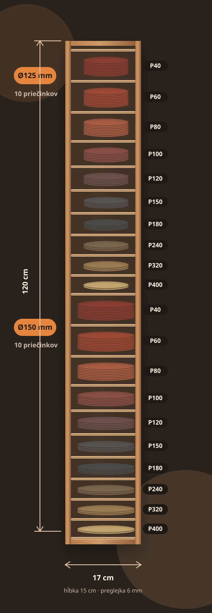
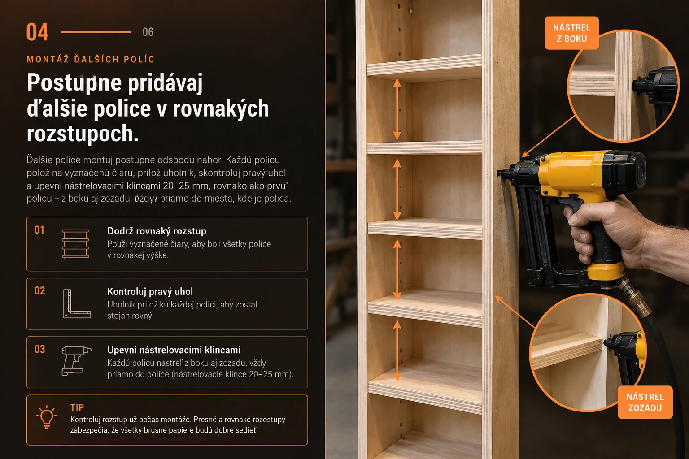

Rezací plán
- 2× bočnica120 × 15 cm
- 21× polica15,8 × 15 cm
- preglejka6 mm
REFERENČNÝ PROJEKT · PODĽA REÁLNEHO STOJANA Z DIELNE
Úzky 120-centimetrový stojan z 6 mm preglejky. Dvadsať priečinkov, dve veľkosti kotúčov a každá zrnitosť presne tam, kde ju čakáš.
 HOTOVÝ PRODUKT · REÁLNY KONCEPT
HOTOVÝ PRODUKT · REÁLNY KONCEPT
PREČO TENTO TVAR FUNGUJE
Koncept vychádza priamo z reálneho stojana v dielni. Namiesto dvoch širokých stĺpcov ide všetko nad seba. Výsledkom je iba 17 cm široký kus nábytku, ktorý pojme dvadsať samostatných zásobníkov na okrúhle brúsne papiere.

ROZLOŽENIE PRIEČINKOV
Výšky otvorov sú rovnaké pre Ø125 aj Ø150 mm. Dve série sa za sebou presne zmestia do 120 cm.
MATERIÁL & NÁRADIE
VÝROBNÝ POSTUP
Každý krok bude mať vlastný fotorealistický záber z rovnakého typu dielne, s rovnakou preglejkou, svetlom a vizuálnym štýlom. Kroky 1 až 4 sú už spracované fotorealisticky a s jemným pohybom pri scrollovaní. Ďalšie kroky budeme dopĺňať rovnakým vizuálnym jazykom.

PRÍPRAVA A REZANIE
Najskôr priprav dve bočnice 120 × 15 cm a potom sériovo narež 21 políc 15,8 × 15 cm. Pri policiach nastav doraz iba raz. Čím presnejšie budú diely rovnaké, tým ľahšie sa bude vysoký stojan skladať.
ROZMERANIE PRIEČINKOV
Obe bočnice polož vedľa seba, zarovnaj ich horné hrany a čiary prenášaj cez uholník jedným ťahom. Začni zhora pri P40. Keď sú bočnice hotové, tie isté úrovne prenes aj na zadnú stenu, aby si pri nastreľovaní videl presnú polohu police z troch strán.


MONTÁŽ PRVEJ POLICE
Policu posaď na vyznačenú úroveň, pritlač ju tesárskym uholníkom a až potom ju zaisti. Hlava pneumatickej nástreľovačky musí byť presne v rovine police, aby klinec prešiel cez bočnicu priamo do hrany police. Rovnaký princíp platí aj zozadu: klinec ide cez zadnú stenu do zadnej hrany police, nie vedľa nej.

MONTÁŽ ĎALŠÍCH POLÍC
Keď prvá polica sedí presne, pokračuj rovnakým spôsobom smerom nahor. Každú policu polož na vyznačenú čiaru, skontroluj 90° uhol a zaisti ju nástrelovacími klincami 20–25 mm z boku aj zozadu. Nástrel rob vždy priamo v úrovni hrany police.
Úzky 120-centimetrový stojan musí byť pevný. Pred dotiahnutím skontroluj zvislosť vodováhou.
Horná séria Ø125 mm, spodná Ø150 mm. Najpoužívanejšie zrnitosti nech sú prirodzene po ruke.
P40, P60 a P80 sa hromadia rýchlejšie. Práve preto je variabilná výška otvorov praktickejšia než dokonale pravidelná mriežka.